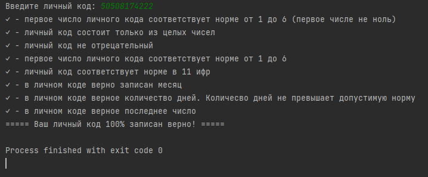

Проверка личного кода
Alex-Alen Pugatsov (TA-21V)

Visual Studio Code
Visual Studio Code — редактор исходного кода, разработанный Microsoft для Windows, Linux и macOS. Позиционируется как «лёгкий» редактор кода для кроссплатформенной разработки веб- и облачных приложений. Использовался для написания кода.
Домашнее задание
На языке Python сделать проверку личного кода
На языке Python сделать проверку личного кода
Снимок задания

Код программы
# Alex-Alen Pugatsov (TA-21V)
# Проверяем перое число на ноль в начале
isikukood_str = str(input("Введите личный код: "))
try:
if int(isikukood_str[0]) == 0:
print("x - первое число личного кода не соответствует норме от 1 до 6 (первое числе не должно быть ноль)")
exit()
except ValueError:
print("x - личный код состоит не только из целых чисел")
exit()
print("✓ - первое число личного кода соответствует норме от 1 до 6 (первое числе не ноль)")
# Проверка на целое число (должно быть все целые числа)
try:
isikukood = int(isikukood_str)
except ValueError:
print("x - личный код состоит не только из целых чисел")
exit()
print("✓ - личный код состоит только из целых чисел")
# Проверка лицного кода на положительное число
if isikukood < 1:
print("x - личный код не может быть отрецательным")
exit()
print("✓ - личный код не отрецательный")
# Добавление числа в массив (по отдельной цифре за ячейку)
isikukood_array = [int(x) for x in str(isikukood)]
# Проверка первого числа (должно быть от 1 до 6)
if isikukood_array[0] < 1 or isikukood_array[0] > 6:
print("x - первое число личного кода не соответствует норме от 1 до 6")
exit()
print("✓ - первое число личного кода соответствует норме от 1 до 6")
# Проверка на длину (должно быть 11 цифр)
if len(isikukood_array) != 11:
print("x - личный код не соответствует норме в 11 ифр")
exit()
print("✓ - личный код соответствует норме в 11 ифр")
# Проверка на месяц рождения (не должно быть больше 12)
if isikukood_array[3] == 1:
if isikukood_array[4] < 0 or isikukood_array[4] > 2:
print("x - в личном коде неверно записан месяц")
exit()
if isikukood_array[4] < 1 or isikukood_array[4] > 9:
print("x - в личном коде неверно записан месяц")
exit()
print("✓ - в личном коде верно записан месяц")
# Получить одно число из 6 и 7
six_num = isikukood_array[5]
seven_num = isikukood_array[6]
six_seven_num_together = int(str(six_num) + str(seven_num))
# Получить одно число из 4 и 5
four_num = isikukood_array[3]
five_num = isikukood_array[4]
four_five_num_together = int(str(four_num) + str(five_num))
# Проверка на весокосный год
second_num = isikukood_array[1]
third_num = isikukood_array[2]
second_third_num_together = int(str(second_num) + str(third_num))
def vesokosnyi(year):
if (year % 40 == 0) and (year % 10 == 0):
return True
elif (year % 4 == 0) and (year % 10 != 0):
return True
else:
return False
# Проверка на дни в месяце (не должно быть больше дней чем есть в месяце)
if six_seven_num_together == 1 or 3 or 5 or 7 or 8 or 10 or 12:
if four_five_num_together > 31:
print("x - в личном коде неверное количество дней чем есть в этом месяце")
exit()
if four_five_num_together == 4 or 6 or 9 or 11:
if six_seven_num_together > 30:
print("x - в личном коде неверное количество дней чем есть в этом месяце")
exit()
if four_five_num_together == 2:
if vesokosnyi(second_third_num_together):
if six_seven_num_together > 29:
print("x - в личном коде неверное количество дней чем есть в этом месяце (весокосный год)")
exit()
if six_seven_num_together > 28:
print("x - в личном коде неверное количество дней чем есть в этом месяце (весокосный год)")
exit()
print("✓ - в личном коде верное количество дней. Количесво дней не превышает допустимую норму")
# Проверка последнего числа
last_number = int((isikukood_array[0] * 1 + isikukood_array[1] * 2 + isikukood_array[2] * 3+ isikukood_array[3] * 4+ isikukood_array[4] * 5+ isikukood_array[5] * 6+ isikukood_array[6] * 7+ isikukood_array[7] * 8+ isikukood_array[8] * 9+ isikukood_array[9] * 1) % 11)
last_number_final = last_number * 11
last_numberV2 = int((isikukood_array[0] * 3 + isikukood_array[1] * 4 + isikukood_array[2] * 5+ isikukood_array[3] * 6+ isikukood_array[4] * 7+ isikukood_array[5] * 8+ isikukood_array[6] * 9+ isikukood_array[7] * 1+ isikukood_array[8] * 2+ isikukood_array[9] * 3) % 11)
if last_number <= 9:
if last_number != isikukood_array[10]:
print("x - в личном коде неверное последнее число")
exit()
if last_number > 9:
if last_numberV2 != isikukood_array[10]:
print("x - в личном коде неверное последнее число")
print(last_numberV2)
print(last_number)
exit()
print("✓ - в личном коде верное последнее число")
print("===== Ваш личный код 100% записан верно! =====")